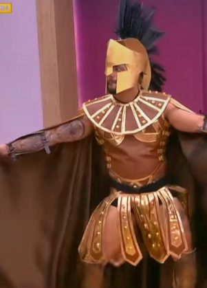

altafulla es mejor q el flaco?:
Respuesta corta: no. Respuesta larga: Altafulla es el alma del show, es el que sale con más pendejadas, el que hace más cosas que ni idea porque acabo de empezar a ver el reality ayer, y sin embargo, es mejor el Flaco. Altafulla carece de la presencia del Flaco, Altafulla no tiene cara ni pinta de idiota, el Flaco sí, lo que contrasta con cómo es, y lo hace gracioso. Altafulla carece de los valores y el conocimiento del Flaco; en su lugar, tiene razonamiento de animalito.

El Flaco es el de Pedro el Escamoso y otra novela por ahí donde hace de mafioso. Altafulla es el de La Casa de los Famosos, ni idea de dónde sea. Igual eso no lo hace más o menos, solo que no sé de dónde salió y tengo curiosidad. Altafulla puede que sea homosexual debido a su disfraz peculiar de romano, que como sabemos, los romanos hacían orgías gay entre ellos, porque eran súper gays. Esto no le pasa al Flaco, ya que él es un tipo serio y sabiondo, conocedor del verdadero placer.
Altafulla es oportunista y puede que tenga algún tipo de autismo. Además, no trabaja para que Veolia me barra la casa, la mía y la de todos los colombianos, cosa que, como saben, el Flaco hace. En conclusión, Altafulla es una gran persona, pero el Flaco es superior.